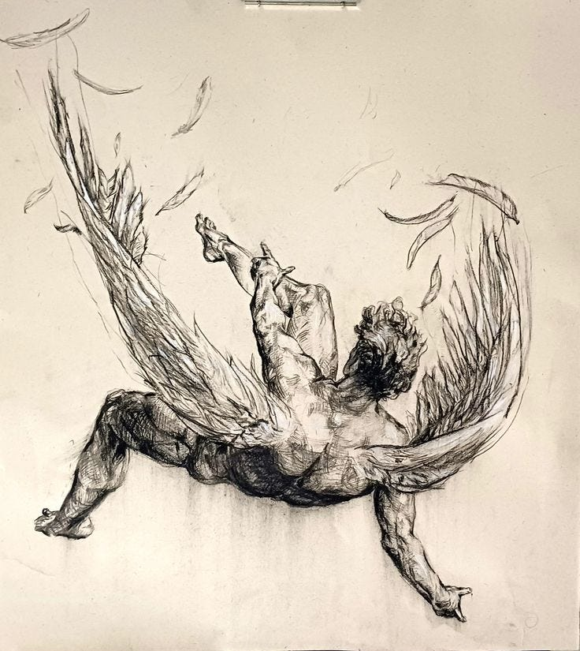

Na história tradicional, Ícaro, filho de Dédalo, construiu asas para fugir do labirinto, a prisão feita para o grande Minotauro. Porém, ao sair do labirinto, Ícaro voa alto demais e, cego pela sua liberdade e pelo desejo de sentir o SOL, acaba voando perto demais dele. Por isso, suas asas, construidas com cera, derretem e ele cai no mar e morre.

Mas, porque eu digo que, ao invés de matar, Ílios, o SOL, salvou Ícaro?